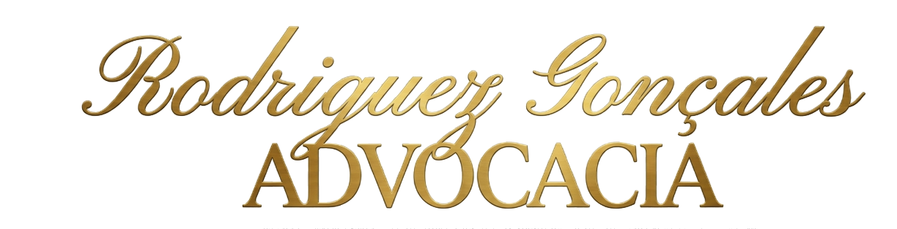
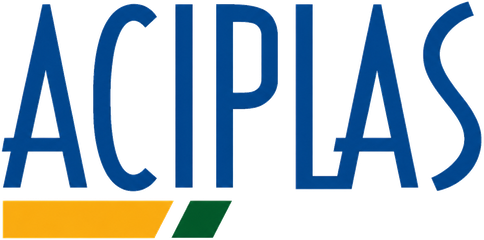
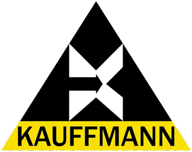
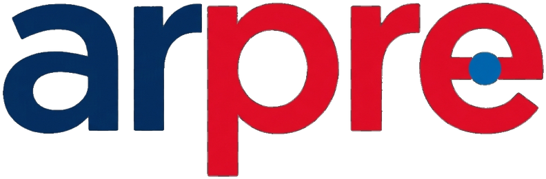

Atuamos em desapropriação, direito imobiliário, ambiental e trabalhista, defendendo pessoas físicas e empresas com estratégia jurídica construída caso a caso.
Concentramos nossa atuação nas frentes onde temos mais experiência acumulada e melhores resultados para o cliente.
Defesa de proprietários em processos de desapropriação por utilidade pública, com foco em indenização justa.
Regularização, usucapião, contratos de compra e venda e disputas possessórias.
Licenciamento, regularização fundiária rural e defesa em autuações ambientais.
Representação de empregados e empregadores em reclamações e acordos trabalhistas.
Planejamento tributário, defesa em autuações fiscais e recuperação de créditos.
Contratos, responsabilidade civil e ações de indenização em geral.
Proteção de Dados Pessoais no Brasil e no Mundo, Compliance Digital e Termos de Uso para Sites e Aplicativos.
Constituição e registro de fundos de investimento no Brasil, assessoria em fundos de investimento internacionais e elaboração e revisão de contratos internacionais
Cada advogado do time atua em poucas áreas do direito, com profundidade técnica real, não generalismo.
O cliente acompanha o andamento do processo com linguagem clara, sem "juridiquês" desnecessário.
Mais de duas décadas de atuação, com casos de referência em desapropriação e direito imobiliário.
Fundado em 1998, o escritório Rodriguez Gonçales construiu sua reputação a partir de casos complexos de desapropriação por utilidade pública, expandindo ao longo dos anos para áreas correlatas como direito imobiliário, ambiental e tributário.
Hoje, a equipe reúne advogados especializados que atuam de forma coordenada, garantindo que cada processo seja acompanhado por quem realmente domina aquela área específica do direito.
OAB/SP · Registro Nº 000.000Fui indenizado de forma muito mais justa do que a proposta inicial do órgão público. O escritório conduziu tudo com clareza.
Resolveram uma disputa de usucapião que já se arrastava há anos. Comunicação sempre transparente durante todo o processo.
Equipe técnica e disponível. Me senti seguro em cada etapa da negociação trabalhista.
A primeira conversa é feita por WhatsApp ou telefone, para entender o caso e indicar o advogado responsável pela área correspondente.
O ideal é procurar orientação jurídica antes de aceitar qualquer proposta de indenização, já que o valor inicial oferecido pelo órgão público costuma ser negociável judicialmente.
Sim, atuamos em processos em diversos estados, com atendimento inicial remoto.
Depende da natureza do caso — em processos de desapropriação, por exemplo, parte dos honorários pode ser vinculada ao êxito. Os detalhes são alinhados na consulta inicial.
Artigos que explicam, em linguagem acessível, os temas mais frequentes de quem passa pelas nossas áreas de atuação.
Entenda os prazos, o que pode ser contestado e como funciona a avaliação do valor indenizatório.
Os requisitos legais, tipos de usucapião e a documentação necessária para dar entrada no processo.
O que avaliar antes de assinar um acordo e quando vale a pena buscar orientação jurídica antes.
Empresas de diferentes setores que contam com o escritório para a condução de seus processos jurídicos.


